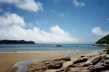
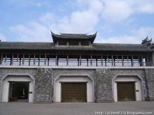
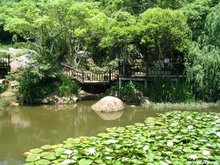

桃花岛简介
桃花岛，拥有舟山群岛第一高峰--安期峰;舟山第一深港--桃花港;东南沿海第一大石--大佛岩;是中国三大水仙名品之一的普陀水仙和浙江名茶普陀佛茶的主产地，又是浙江沿海林木品种最多的岛屿，有着"海岛植物园"的美称。其丰富的自然景观、人文景观和神话传说有机融合，形成了六大景区，即:桃花峪景区、塔湾金沙景区、安期峰景区、大佛岩景区、悬鹁鸪岛景区和桃花港景带，组合成武侠、佛教、道教文化三条旅游专线。拥有金沙日出、金龙吐珠、安期云雾、高山闻钟、百家朝圣、山石桃花、奇洞探幽、桃港雄姿、砾滩涌潮、林带烟树、龙潭帘珠、大佛夕照12大景观和大佛岩、弹指峰、东海神珠、清音洞、白雀寺、仙人桥、含羞观音、龙牙擎天、定海古城、安期炼丹洞等30余处主要景点。
主要景区
桃花岛景点
桃花岛是金庸先生所著《射雕英雄传》和姐妹篇《神雕侠侣》所描绘的美妙神奇东海小岛。
射雕影视城景区
射雕影视城为射雕英雄传旅游城，是我国唯一一座海岛影视基地旅游城坐落在金庸笔下桃花岛风光迷人的散花峰下，占地2.5平方公里。
桃花峪景区
桃花峪景区位于桃花岛东海岸，是岛上自然生态环境最优美的区块，这里奇岩壁立、惟妙惟肖，山顶远观海景、晨观日出，主要景点有:桃花寨、东海神珠、弹指峰、神雕石、 海龟巡岸、含羞观音。
旅游开发
-
开发现状
桃花岛位于舟山群岛东南部，以岛建镇，有悠久的开发历史，在商周时就有人类活动的足迹。因其独特的渔、港、景资源优势，1993年被浙江省人民政府批准为第三批省级风景名胜区，并确立了"以海洋渔业为主导、旅游业为先导"的经济发展战略方针，也是浙江省实施"蓝色工程"的试点之一。桃花岛是先秦时安期生的修炼之地，也是金庸先生所著《射雕英雄传》和《神雕侠侣》中描绘的美妙神奇的东海上的一方悬水岛屿，被誉为"海上仙山"，是海岛文化、武侠文化和宗教文化的完美集合。现已开发多处景区、景点，有桃花女龙、观音传奇和武侠文化等多条旅游专线。岛上基础设施和旅游设施配备齐全。一个滨海型的旅游度假区正在逐步形成。
-
资源条件
桃花岛旅游资源无论是从资源的丰度、品位度，还是资源的集中度来看，都具备相当好的开发优势。岛上既有原汁原味的海岛生态，又有神奇壮观的海滨胜景;既有鬼斧神工的奇峰怪石，又有得天独厚的海崖沙滩;既有源远流长的宗教文明，又有引人入胜的游侠文化。全岛旅游资源分布成片，布局合理，景区面积约占全岛面积的三分之二强，形成了点、线、面结合的网状分布格局。可以说，桃花岛开发佛教旅游的资源条件已很优越，而更关键的是，岛上有白雀寺的存在。据《中国二十四史演义》记载，桃花山仙人岭下白雀寺是观世音出家修行得道之处。相传妙庄王的三公主妙善立志修行，终于在白雀寺修成正果，去普陀山建立观音道场，成为中国佛界首席菩萨。至今在桃花岛上还流诵着当地独有的记录妙善公主修行成正果的《观音经》。这些为桃花岛佛教旅游开发提供了物质基础和文化渊源。>
-
区位条件
桃花岛与主要客源地的距离不远，较为适中。桃花岛的主要客源地是舟山本地区、杭州、宁波、上海等地。它们与桃花岛虽有大海相隔，但桃花岛仍处于这几个重要旅游客源市场的影响和辐射圈内。其次，桃花岛连接客源地的交通条件较好。采用自备车、快客、快艇、车渡甚至飞机等许多交通方式均可至桃花岛。